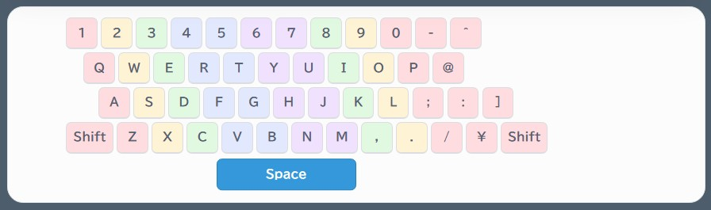
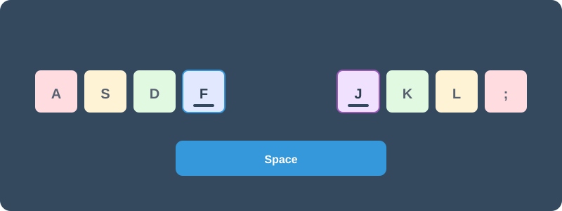

タイピング上達のコツ｜ホームポジションの基本と挫折しない練習法
初心者からタッチタイピングを身につけるための完全ガイド
パソコンを使うなら、まず身につけたいのが「文字を入力する力」です。
メールを書くときも、ChatGPTに質問するときも、仕事で資料を作るときも、キーボードから文字を入力する場面はたくさんあります。
その基本となるのがタッチタイピングです。
タッチタイピングとは、キーボードを見ずに、指の位置を意識して文字を入力する方法です。
以前は「ブラインドタッチ」と呼ばれることもありました。
「自分には無理かもしれない」
「指がたくさんあって、どこを動かせばいいかわからない」
そう感じる初心者の方も多いと思います。
でも、安心してください。
実は、タイピングで最初に覚えるべきキーは、思っているよりもずっと少ないのです。
最初から速く打つ必要はありません。
まずは正しい指の位置と、キーボードの基本を知ること。
そこから少しずつ、自分の指に覚えさせていきましょう。
タッチタイピングができるようになると、キーボードを見ずに文字を入力できるようになります。これは単に「速く打てる」というだけではありません。
画面を見ながら、考えることと文字入力を同時に進められる。
ここが大きなポイントです。仕事では、文章を考えながら入力したり、資料を見ながらデータを入力したりします。そのとき、キーボードを見るために何度も視線を下げていると、思っている以上に時間を使います。タイピングでは、まず「速さ」よりも正しい型を知ること。これが上達への近道です。
実は覚えるキーは「22文字」だけでいい
キーボードにはたくさんの文字が並んでいます。
アルファベットの A から Z まで、全部で26文字あります。
でも、ローマ字入力でよく使う基本の文字を考えてみると、実は使わないものも結構あります。
たとえば、Q、X、C、L などは、日常的な日本語のローマ字入力ではそれほど頻繁には使いません。
そうやって整理していくと、タイピングの基礎で本当に意識したいキーは、両手であわせて約22文字程度に絞られます。
「26文字も覚えなきゃいけないんだ」と思うと気が遠くなりますが、「22文字ならできそう」と思いませんか？
たとえば、キック（KIKKU）やシャッフル（SHAFFURU）のように、拗音や促音の入力方法を理解することで素早く日本語ローマ字が打てるようになります。
まずはこの基本のキーから、指を慣らしていけばいいのです。
1. FとJにある小さな突起の秘密
キーボードの F と J を触ってみてください。
小さな突起があるのがわかると思います。
これは、キーボードを見なくても指の位置を確認できるようにするための目印です。
左右の人差し指を F と J に置けば、そこを基準にして他の指の位置も決められます。
実は、タッチタイピングに慣れている人でも、この突起を使っています。
「キーボードを見ない」というのは、何も手がかりがない状態で打つということではありません。
指先の感覚を使って、自分の位置を確認する。
これもタッチタイピングの基本です。
2. ホームポジションと指の担当（指の帰る家）
タッチタイピングでは、指を置く基本位置があります。
これをホームポジションと呼びます。
ホームポジションは、いわば「指の帰る家」です。
どこかのキーを打つために指を動かしても、打ち終わったら必ずこのホームポジションに戻ってくる。
これができるようになると、キーボードの上で迷子にならなくなります。
タッチタイピングは、暗闇を歩くような作業ではありません。
家（ホーム）からたった一歩、指を外に出して「近所をお散歩」させる。用事が済んだら、すぐに家（ホーム）へ帰る。難しく考える必要はありません。
左手は A、S、D、F。
右手は J、K、L、;。
そして、それぞれの指には担当するキーがあります。
ぱそトレ！式ホームポジション（A・F・J 3点固定）
一般的な解説では「両手をホームポジションに置く」とだけ言われますが、初心者の方はそれだと指が浮いてしまったり、どこに戻ればいいか分からなくなったりします。
そこで、ぱそトレ！では「A・F・J 3点固定」という意識をおすすめしています。
左手の小指を A、人差し指を F、そして右の人差し指を J にそっと置く。
この3つのポイントを最初に押さえるだけで、両手の位置がピタッと安定します。

▲ ぱそトレ！式：A・F・J 3点固定のホームポジション
そして、それぞれの指がどのキーを担当するのかを示したのが、次の指別担当カラーガイドです。

▲ ぱそトレ！式：指別担当カラーガイド
「このキーは、どの指で押すのか？」
最初はこれを確認しながら練習してみてください。
指の担当を決めておくことで、キーを探す時間が少なくなり、指が自然に動くようになっていきます。
3. 上達の鉄則は「正確さ ＞ 速さ」
タイピング練習を始めると、どうしても速さが気になります。
でも、最初から速く打とうとする必要はありません。
正確に打てるようになってから、速さを伸ばす。
この順番が大切です。
間違えた指使いのまま速く打つ練習を続けると、その動き自体が指に身についてしまいます。
まずはゆっくりでいい。
正しい指で、正確に入力する。
その繰り返しが、あとから速さにつながっていきます。
4. すぐに打たない「記憶の練習法」
タイピングがなかなか上達しないと感じるとき、つい 「とにかく数をこなそう」 と焦ってしまいがちです。
でも、ただキーを叩くだけでは、指の形や動かし方が間違えたまま癖になってしまうこともあります。
そこで試してほしいのが、すぐにキーを叩かない「記憶の練習法」です。
ここが上達のスピードを分ける最大のポイントです。画面に文章が表示された瞬間、焦ってすぐに1文字目を打つのをやめてみましょう。
文章を「自分の言葉」に落とし込む
まずは表示された単語や短い文章を、「頭の中で読み切る（覚える）」ところまで一呼吸置きます。内容を理解してから打ち始めることで、以下の変化が起こります。
- 「文字」ではなく「言葉」として打てる： 1文字ずつ追いかける「書き写し」の状態から脱却できます。
- 思考のスピードで入力できる： 自分の内側から出た言葉を打つのと同じ感覚になり、流れるような打鍵が可能になります。
- ミスが減る： 先の展開が頭に入っているため、指が次に備える余裕が生まれます。
5. 負担を減らす「薬指」の活用術
キーボードの右上にある P や -（ハイフン）は、一般的には小指で打つと教わります。しかし、初心者が無理に伸ばすとホームポジションが崩れ、手首を痛める原因になります。
ぱそトレ！では、右手薬指を積極的に使うことを推奨しています。人差し指を J に残したまま薬指を斜め上に伸ばすことで、基本位置を崩さずに、安全かつ正確に打鍵できます。

▲ 手首を浮かさず、リラックスして「指の長さ」を活かしましょう
6. 自己流は本当にダメ？基本と応用の境界
ここは少し誤解してほしくないところです。
自己流がダメ、ということではありません。
ぱそトレ！でも、「このキーを押すときは、この指のほうが打ちやすい」といった、実際の入力に合わせた方法を紹介することもあります。
人間の手や指の形は、一人ひとり違います。
だから、基本を身につけたあとに、
「自分の場合は、こっちのほうが打ちやすい」
「この動きに変えたほうがスムーズだ」
と工夫することは、悪いことではありません。
むしろ、それは基本を知ったうえでの応用です。
基本と応用の境界
私がタイピングを教えるときに大切だと思っているのが、
「基本と応用の境界を知ること」
です。
基本とは、みんなが知っているベースとなる知識です。
ホームポジションや指の担当など、
「タイピングなら、まずこれを知っておこう」
という共通の土台があります。
これを知っておくと、
「なぜ、この指で押すのか？」
「なぜ、この位置から始めるのか？」
という理由も見えてきます。
そして、誰かとタイピングについて話すときにも、
「ここまでは基本的なことなんだ」
という共通認識を持ちやすくなります。
タイピングについての「常識」がわかってくるわけです。
一方、応用は、その基本を知ったうえでの改良や改善です。
手や指の形が一人ひとり違うように、
「もっとこうしたら打ちやすい」
「この動きなら自分はスムーズに入力できる」
という工夫が出てきます。
そして、基本を知ったうえでの自己流なら、私は問題ないと考えています。
問題なのは、基本を知らないまま、
「自分が打ちやすいから」
という理由だけで自由に打ち続けてしまうことです。
それでは、タイピングが上達していく途中で壁にぶつかることがあります。
ある程度までは打てても、そこから先に伸びにくくなる。
だからこそ、まず基本を知る。
そのうえで、自分に合った方法を探していく。
これが、ぱそトレ！が考えるタイピングの学び方です。
7. 私も最初は我流だった
ここで、少し私自身の話をします。
私はパソコンインストラクターを始める前まで、文字入力は我流でした。
キーボードも何度も見ながら打っていました。
当時は、それで特に困っていなかったんです。
ところが、仕事で資料を作るようになり、
「この期限までに資料を完成させる」
という場面が増えてきました。
さらに、タイピングスキルを人に教える立場になりました。
そのとき、
「自分ができていないことを、人に教えることはできない」
と思ったんです。
そこで、当時「ブラインドタッチ」と呼ばれていたスキルを、本当の基礎から学び直しました。
正直、最初は今までのほうが楽に感じることもありました。
でも、続けていくうちに、キーボードを見なくても指が動くようになってきた。
そして今振り返ると、
あのとき、本当にやっておいてよかったと思えるスキルです。
8. キーボードを見ながら打つのはダメ？
これも、ダメということではありません。
趣味で使うだけなら、時間をかけて入力しても問題ないでしょう。
仕事でも、時間に余裕があるなら困らないかもしれません。
ただ、仕事には期限があります。
資料を作りながら、別の資料を確認する。
データを見ながら入力する。
文章を考えながら文字を打つ。
こうした作業をしていると、
「画面を見る」
「資料を見る」
「キーボードを見る」
と、目線がいろいろな場所に動きます。
そして、人間は同時にたくさんのことを処理しようとすると、当然疲れます。
考えることや行動することに使える力も、少しずつ削られていきます。
だからこそ、タイピングスキルを身につける。
「文字を打つ」という作業に使う時間と労力を減らしていく。
これだけでも、仕事の負担は変わってきます。
今までキーボードを見ながら入力していた時間が減れば、その分、自分の時間を別のことに使えるようになります。
9. AI時代だからこそタイピングは必要
「AIがもっと進化したら、キーボードで文字を打つ必要はなくなるのでは？」
そう思う人もいるかもしれません。
たしかに、AIとのやり取りでは音声入力がどんどん便利になっています。
話しかけるだけでAIに質問できたり、文章を作ってもらったりすることも、これからさらに増えていくでしょう。
ただ、仕事の現場で、いつでも声を出してAIを使えるとは限りません。
周りに人がいる。
会議中である。
共有スペースで仕事をしている。
静かに作業しなければならない。
そんな場面では、声ではなくキーボードから入力するほうが自然です。
そもそも、AIを使うために必要なのは「声」ではありません。
自分の考えをAIに伝えることです。
「こういう資料を作りたい」
「このデータから問題点を見つけてほしい」
「この文章をわかりやすく直してほしい」
「この仕事を効率化する方法を考えてほしい」
AIを仕事で活用するほど、こうした自分の考えや指示をAIに伝える場面は増えていきます。
そのとき、キーボードで自分の言葉をすぐに入力できることは、大きな武器になります。
AIに何をしてもらうかを考えるのは人間。
それをAIに伝えるのも人間です。
だから私は、タイピングを「昔からあるパソコンの基本スキル」だけではなく、AI時代にも役立つポータブルスキルだと考えています。
ポータブルスキルというのは、会社や環境が変わっても使えるスキルのこと。
パソコンが変わっても、職場が変わっても、仕事の内容が変わっても、
「自分の考えを文字にして伝える力」
は持っていくことができます。
AIが発展すればするほど、AIに任せられる作業は増えていくでしょう。
だからこそ、人間側には、
「何をしたいのか」
「何を伝えたいのか」
を整理して伝える力が必要になります。
そのための基本的な道具のひとつが、今のところキーボードです。
タイピングは、AIに仕事を奪われないためのスキルというより、
AIを自分の仕事に活かすためのスキル。
私は、これからのタイピングをそう考えています。
今回のまとめ
タイピングの基本で、まず覚えておきたいのはこの5つです。
- FとJの突起を使って指の位置を確認する
- ホームポジションと指の担当を知る
- 速さよりも、まず正確さを大切にする
- すぐに打たず、文章を頭に入れてから打ち始める
- P や - は、無理に小指を伸ばさず右手薬指で応用もOK
そして、もうひとつ覚えておいてほしいことがあります。
自己流が悪いわけではありません。基本を知ったうえで、自分に合うように工夫する。それは立派な「応用」です。
だからこそ、まずは基本を知るところから始めてみてください。
タッチタイピングは、決して難しい特別なスキルではありません。少しずつ練習すれば、指は覚えていきます。
ぜひ、この機会に練習を始めてみてください。
ぱそトレ！の記事を読んでいくと、これまで知らなかったタイピングの知識や、実際の入力で役立つ考え方も見えてきます。
タイピングに、ぜひ希望を持ってください。
基本を知る。練習する。そして、自分に合う方法へと工夫していく。それが、タイピングを長く使えるスキルにしていく道だと思っています。